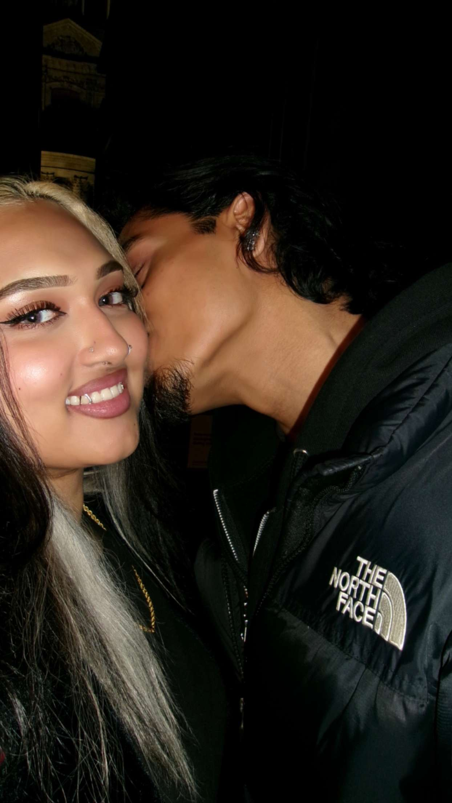
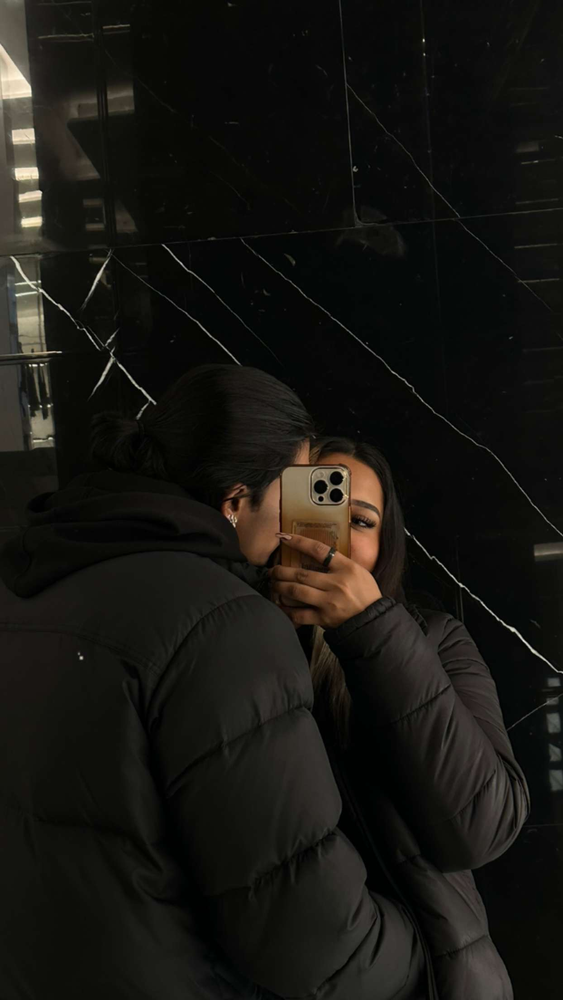
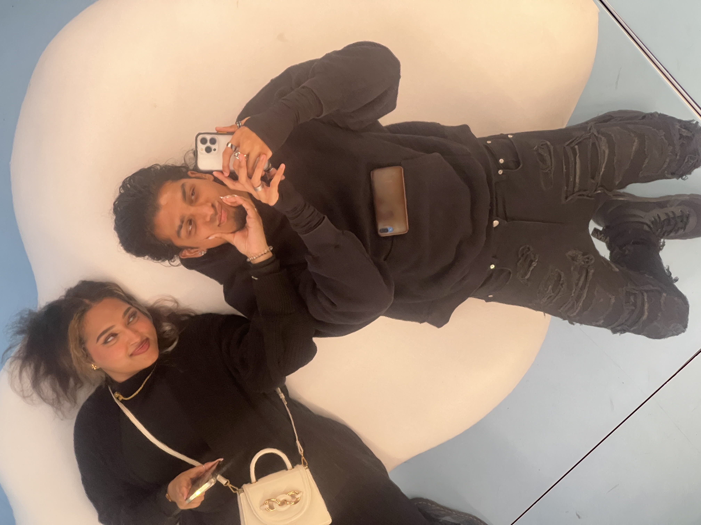
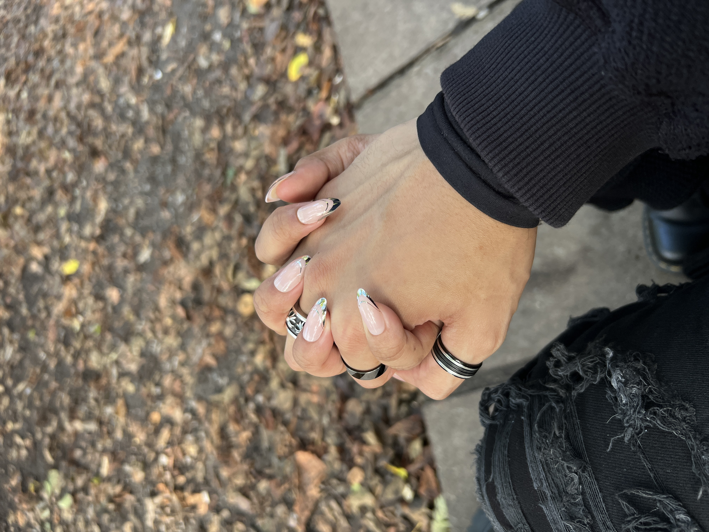
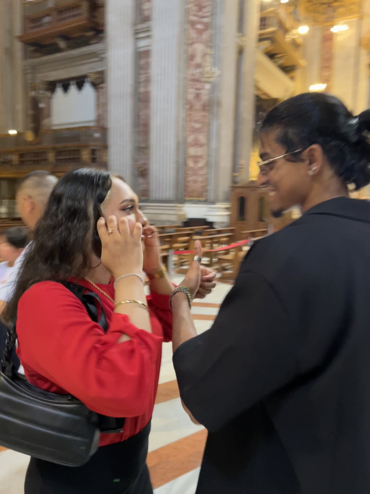

Tanti Auguri!
Per una persona speciale, in un giorno speciale
30/12/2000 - La nascita di una stella.
Ed é finalmente arrivato questo giorno molto speciale, tutto dedicato a te, solamente a te. Celebrare la nascita di questa belissima stella regalata da Allah, la stella piú bella del mondo. Sei di una bellezza straordinaria amore mio, non riesco a togliere il mio sguardo da te, vorrei fissarti per ore, per giornate, per settimane, per anni e per tutta la vita. Amo perdermi nei tuoi occhi, amo ammirare il tuo sorriso, amo guardare le tue belle labbra ed ogni volta non vedo l’ora di baciarti. Sei cosi irresistibile vieni qua ti SMOOCCHOOOO TUTTAAAAA! No ma seriamente amó ma come fai ad esse cosi bella? Ma per favore ti prego mi lasci a bocca aperta ogni volta che ti vedo. Che bello potertelo dire senza alcun problema ora :3 spesso ora. La ragazza piú bella del mondo ce l’ho solo io.
Dal primissimo momento in cui ci siamo incontrati nel 2015 (wow quasi 10 anni), sei sempre stata estremamente gentile e dolce con me, la tua presenza nella mia vita é stata la cosa piú bella del mondo. Il modo in cui la nostra amicizia si é rafforzata nel passare degli anni, sembra proprio che é stato tutto pianificato dal destino.
Tutti questi anni trascorsi insieme a te sono stati indimenticabili. Vibes & Vibes ed ogni volta volevo incontrarti sempre di piu, non vedevo l’ora di rivederti e aspettavo pazientemente quella “prossima volta”. C’era sempre quel forte desiderio di passar tempo co te o almeno starti accanto… sempre. Il nostro bond é cosi speciale che faccio fatica a descriverlo a parole, ma so che tu mi capisci.
Due ragazzini all’oscuro dei sentimenti che provavamo per l’uno e l’altra, ed invece guarda noi ora, tutte e due 23enni e finalmente insieme dopo tutti questi anni, sapendo che siamo fatti apposta per l’uno e l’altra. Il destino ha fatto il suo lavoro in tutti questi anni. Che forse, come dici tu, c’é stata na chance dove ci siam pure incontrati da piccoli… how cute. Chi l’avrebbe mai immaginato che forse 10yrs+ dopo che ci siam incontrati, saremo stati una coppia, che avremmo dato tutto il nostro sangue ed amore per l’uno e l’altra.
Tu amore mio sei la mia speranza, dai sempre il 100% di te stessa per rallegrarmi le giornate e per farmi stare sempre bene, TU sei veramente il regalo piu grande ed importante che ho ricevuto nella mia vita. Ti ringrazio amore mio! Ti prometto che faró di tutto e di piú per te. Sei cosi serena ed adorabile che vorrei tenerti stretta tra le mie braccia per ore ed ore, per farti capire che io ci saró sempre per te in ogni momento, che su di me ci puoi contare, che sono disposto a far di tutto per farti star felice. Vorrei farti sapere che io daró il 100% di me stesso anche tra 50 anni. Voglio essere la tua fonte di pace, il posto in cui vorresti sempre stare e tornare in qualsiasi momento.
Mi hai reso un uomo diverso, sono una persona cambiata, mi hai dato speranza, mi fai sentire emozioni che avevo paura di provare, ti ringrazio. Io senza di te non esisto, io senza di te non vivo, senza di te, la mia vita non va avanti. Io vedo un futuro con te, io voglio un futuro con te. Io voglio solo te, solamente te. E desidero tanto che resti mia per sempre, per eternitá e per tutta la vita.
Ti penso ogni secondo della mia giornata, sin dal primo giorno non smetto MAI di pensarti, penso a TE, penso a NOI, penso a tutto. Ogni giorno m’innamoro sempre di piu, ogni giorno voglio amarti e darti tutto me stesso.
Sei la mia gioia, la mia felicitá, il mio MONDO, la mia ANIMA GEMELLA, il mio tutto.
Sei il mio tesoro piu prezioso e sei la gemma che voglio tenere sempre con me, prenderó cosi tanta cura che non ci sará segno di nessun graffio. Amo il tuo modo di fare, il tuo sorriso, il tuo carattere, il tuo sarcasmo, amo tutto di te. Sei troppo importante per me ed io daró il 100% di me stesso. You mean a lot to me.
Non sai quanto mi rendi felice e quanto son felice di averti, mi fai star bene amore mio, sono cosi fortunato ad averti. Te lo dico spesso ma non ho paura di ripeterlo perché questo é veramente ció che penso; io vado matto per te, ma talmente matto che farei di tutto e di piu per te, above and beyond.
Vorrei ringraziarti fino all’infinito e dirti un sincero ed onesto GRAZIE dal profondo del mio cuore, GRAZIE per amarmi, GRAZIE per esser te stessa, GRAZIE per esser la persona che sei oggi. TU HAI IL MIO CUORE. Io AMO ed APPREZZO tantissimo quando mi racconti di te, di come hai passato la giornata, quel che accade nella tua vita, vorrei far parte di questo viaggio insieme e su di me, ci puoi contare. Puoi sempre venire da me a raccontarmi tutto amore mio, sono il tuo diario e lo sono sempre stato negli ultimi anni. Io per te ci saró sempre, ti aiuteró e ti daró sempre una mano nei momenti piú difficili, e sopratutto, ci saró sempre con te a celebrare i momenti piú belli della tua vita!
Abbiamo passato quasi tutto il 2023 insieme, sia da amici che da fidanzati, e pensare al fatto che son giá passati 5 mesi mi lascia a bocca aperta, quasi metá anno. Il tempo é volato. Questo é solo l’inizio della nostra storia, la parte dei capitoli che scriveremo man mano che andiamo avanti insieme, che poi un giorno, potremmo pure riguardare a questi vecchi ricordi, apprezzare questi momenti e poi raccontarlo pure ai nostri figli.
5 mesi insieme? Ma ci credi? Io faccio ancora fatica a crederci piccola mia… la persona che ho sempre voluto da tanto, che ho sempre ammirato, la persona che mi faceva sciogliere ogni volta che sorrideva, la persona che ha vinto il mio cuore, la persona che mi ha dimostrato una marea di affetto in tutti questi anni che ci conosciamo, la persona che mi ha sempre riempito il cuore di gioia… é MIA?! SOLAMENTE MIA?! COMPLETAMENTE MIA?! FINALMENTE MIA.
Questo é il tuo primo compleanno insieme a ME ed io ti sto facendo gli auguri come il tuo FIDANZATO, come cambiano le cose negli anni eh?
Ormai il 2023 é passato, l’anno piú memorabile della nostra vita direi, sono successe tante cose che se ci penso, mi pare di essere in un sogno. Abbiamo appena messo piede nel 2024 insieme, ti porteró sempre con me. Ho cosi tanta voglia di tenerti per mano e coccolare il tuo bel viso, di accarezzarti e baciarti tutta. Mi manchi, mi manchi ogni secondo che non stiamo insieme, odio tornare a casa dopo averti incontrato, mi sento… vuoto. You made such a huge impact in my life, I literally can’t live without you, I can’t stay a second being far from you.
I really hope that we get married (In Shaa Allah), I really hope that your name is the one Allah has written for me, I pray everyday that we get married because I know and I knooow, you’re the one for me. FINCHÉ MORTE NON CI SEPARI. I deeply cherish the moments we shared and the countless more we have yet to create.
Hai il sorriso piu bello del mondo e mi raccomando, tienitelo sempre nel viso che ti dona tantissimo.
I’ll take care of you and your heart, better than anybody ever did.
Tantissimi auguri al mio grande amore
Con amore infinito,
-F
❤️️
❤️️
❤️️
❤️️
Un piccolo salto nel passato alla nostra primissimissima foto di quando ci siamo messi insieme
